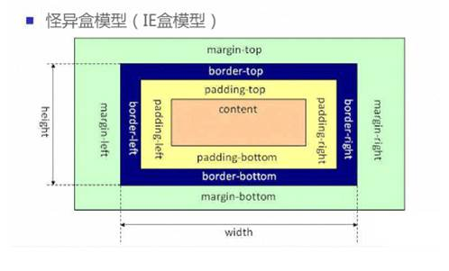

含义：更改原有布局盒子模型的计算方式通过box-sizing属性的取值进行更改
属性：box-sizing
box-sizing 属性允许您以特定的方式定义匹配某个区域的特定元素。
这是由 CSS2.1 规定的宽度高度行为。宽度和高度分别应用到元素的内容框。在宽度和高度之外绘制元素的内边距和边框。
为元素设定的宽度和高度决定了元素的边框盒。
就是说，为元素指定的任何内边距和边框都将在已设定的宽度和高度内进行绘制。
通过从已设定的宽度和高度分别减去边框和内边距才能得到内容的宽度和高度。

说明： 设置为弹性盒（父元素添加）
说明:
顺序指定了弹性子元素在父容器中的位置
row 默认在一行内排列
row-reverse：反转横向排列（右对齐，从后往前排，最后一项排在最前面。
column：纵向排列。
column-reverse：反转纵向排列，从下往上排，最后一项排在最上面
说明：
内容对齐（justify-content）属性应用在弹性容器上，把弹性项沿着弹性容器的主轴线（main axis）对齐
■ flex-start默认，顶端对齐
■ flex-end末端对齐
■ center居中对齐
■ space-between两端对齐，中间自动分配
■ space-around自动分配距离
说明：
侧轴对齐方式
flex-start：弹性盒子元素的侧轴（纵轴）起始位置的边界紧靠住该行的侧轴起始边界。
flex-end：弹性盒子元素的侧轴（纵轴）起始位置的边界紧靠住该行的侧轴结束边界。
center：弹性盒子元素在该行的侧轴（纵轴）上居中放置。（如果该行的尺寸小于弹性盒子元素的尺寸，则会向两个方向溢出相同的长度）。
baseline：如弹性盒子元素的行内轴与侧轴为同一条，则该值与'flex-start'等效。其它情况下，该值将参与基线对齐。
说明：
该属性控制flex容器是单行或者多行，同时横轴的方向决定了新行堆叠的方向。
nowrap：flex容器为单行。该情况下flex子项可能会溢出容器
wrap：flex容器为多行。该情况下flex子项溢出的部分会被放置到新行，子项内部会发生断行
wrap-reverse：反转 wrap 排列。
说明：
当伸缩容器的侧轴还有多余空间时，本属性可以用来调准「伸缩行」在伸缩容器里的对齐方式，这与调准伸缩项目在主轴上对齐方式的 <' justify-content'> 属性类似。请注意本属性在只有一行的伸缩容器上没有效果。
■ flex-start没有行间距
■ flex-end底对齐没有行间距
■ center居中没有行间距
■ space-between两端对齐，中间自动分配
■ space-around自动分配距离
说明：
align-self 属性规定灵活容器内被选中项目的对齐方式。
注意：align-self 属性可重写灵活容器的 align-items 属性
auto 默认值。元素继承了它的父容器的 align-items 属性。如果没有父容器则为 "stretch"。
Stretch 元素被拉伸以适应容器。
Center 元素位于容器的中心。
flex-start 元素位于容器的开头。
flex-end 元素位于容器的结尾。
说明： number排序优先级，数字越大越往后排，默认为0，支持负数。
说明：
复合属性。设置或检索弹性盒模型对象的子元素如何分配空间。
缩写「flex: 1」, 则其计算值为「1 1 0%」
缩写「flex: auto」, 则其计算值为「1 1 auto」
flex: none」, 则其计算值为「0 0 auto」
flex: 0 auto」或者「flex: initial」, 则其计算值为「0 1 auto」，即「flex」初始值
flex-grow 一个数字，规定项目将相对于其他灵活的项目进行扩展的量。 flex-shrink 一个数字，规定项目将相对于其他灵活的项目进行收缩的量。 flex-basis 项目的长度
说明： (必须加前缀)设置弹性盒 使用如下属性，必须在父代设置display:box;
说明：
在父级上设置该属性，则子代按水平排列或竖直排列。
注：所有主流浏览器不支持该属性，必须加上前缀。
1）horizontal 水平排列，子代总width=父级width。若父级固定宽度，则子代设置的width无效，子代会撑满父级宽度。
2）vertical 垂直排列，子代总height=父级height。若父级固定高度，则子代设置的height无效，子代会撑满父级高度。
说明：
在父级设置，子代的水平对齐方式。（父容器里面主轴对齐方式）
1）start 水平左对齐
2）end 水平右对齐
3）center 水平居中对齐
说明：
在父级设置，子代的垂直对齐方式。（父容器里面子容器侧轴对齐方式）
1）start 垂直顶部对齐
2）end 垂直底部对齐
3）center 垂直居中对齐
4）stretch 拉伸子代的高度，与父级设置的高度一致。子代height无效。
说明：
在父级上设置该属性，确认子代的排列顺序。
1）normal 默认值，子代按html顺序排列
2）reverse 反序
说明：
1）占父级元素宽度的number份
2）若子元素设置固定宽度，则该子元素应用固定宽度，其他未设置固定宽度的字元素将余下的父级宽度（父级-已设置固定宽度的子代元素的总宽度按 number占份数
3）若子元素有margin值，则按余下（父级宽度-子代固定总宽度-总margin值）宽度占number份
说明：
属性规定元素应该被分隔的列数
适用于：除table外的非替换块级元素, table cells, inline-block元素
说明：说明： 属性规定列之间的间隔大小
说明：
设置或检索对象的列与列之间的边框。复合属性。
column-rule-color规定列之间规则的颜色。
column-rule-style规定列之间规则的样式。
column-rule-width规定列之间规则的宽度。
说明：
设置或检索对象所有列的高度是否统一
auto：列高度自适应内容
balance：所有列的高度以其中最高的一列统一
说明：
设置或检索对象元素是否横跨所有列。
none：不跨列
all：横跨所有列
说明： 设置或检索对象每列的宽度